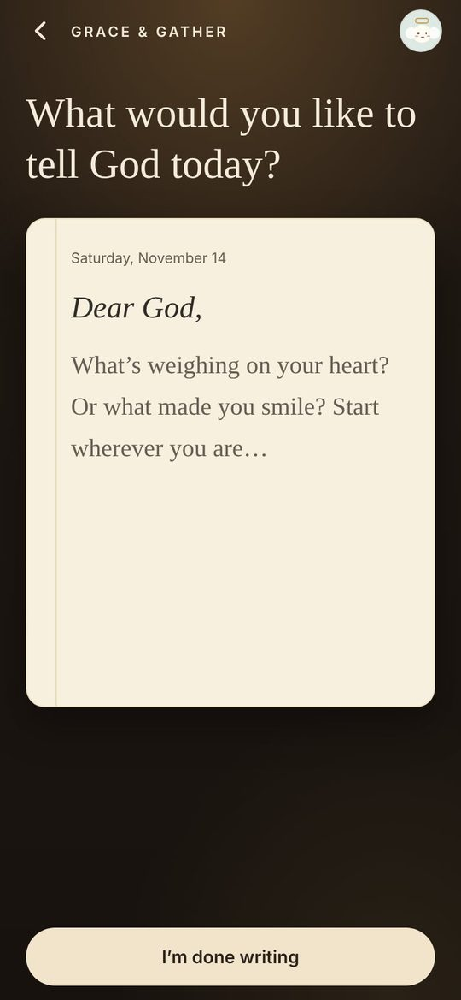

Talk to God
Write to God. A verse answers.
Begin with “Dear God” and write whatever is on your heart. When you finish, you are given one verse chosen for what you wrote, with a few words on why.
If the same weight comes back tomorrow, the verse changes and walks on with you.